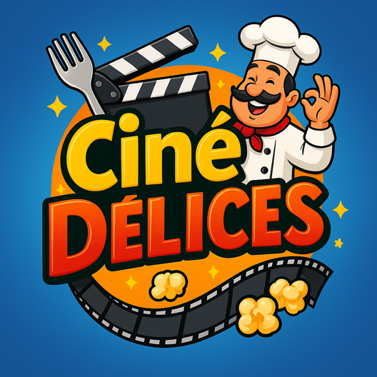

Formation O'Clock
J’ai intégré l’école O’Clock en avril 2025 pour suivre la formation DWWM — Développeur Web & Web Mobile, une formation intensive de 6 mois, en téléprésentiel, basée sur des cours en direct. O'Clock est reconnue pour son enseignement structuré et orienté vers la pratique professionnelle.

Le déroulement de la formation
La formation O’Clock est découpée en plusieurs modules :
- Socle : HTML, CSS, JavaScript, Git, méthodes de travail
- Back-end : Node.js, Express, API REST, PostgreSQL
- Front-end : React, composants, hooks, SPA
- Projet fil rouge : application complète front/back
- Apothéose : présentation du projet final devant un jury professionnel
Les cours étaient dispensés en direct par des formateurs spécialisés, et complétés par des exercices, des rendus de projets et des sessions de révision.
Compétences acquises
Pendant cette formation, j’ai développé des compétences solides :
- Front-end : HTML, CSS, JavaScript, React
- Back-end : Node.js, Express
- Base de données : PostgreSQL + Sequelize ORM
- Outils développeur : GitHub, Postman, VS Code
- Méthodologie : MVC, bonnes pratiques, organisation du code
Projet Fil Rouge : CinéDélices
Durant la formation, j’ai réalisé le projet CinéDélices, un site de recettes inspirées de films. Ce projet m’a permis de travailler comme un développeur fullstack :
- Créer une API complète en Node.js
- Gérer les recettes, médias, ingrédients (CRUD complet)
- Utiliser PostgreSQL + Sequelize
- Concevoir une interface moderne avec React
- Mettre en place un design responsive
Stage O’Clock : RCAB Technologies
À la fin de ma formation, j’ai effectué un stage du 22 septembre au 14 novembre 2024 chez RCAB Technologies. J’y ai développé un site vitrine complet sous WordPress et Elementor.
- Installation et configuration WordPress
- Création de pages et design via Elementor
- Formulaires avancés avec Forminator
- Gestion du responsive design
Certification RNCP Niveau 5
La formation prépare au titre professionnel RNCP “Développeur Web & Web Mobile”, reconnu par l’État. Ce diplôme valide l’ensemble des compétences liées au développement web moderne.